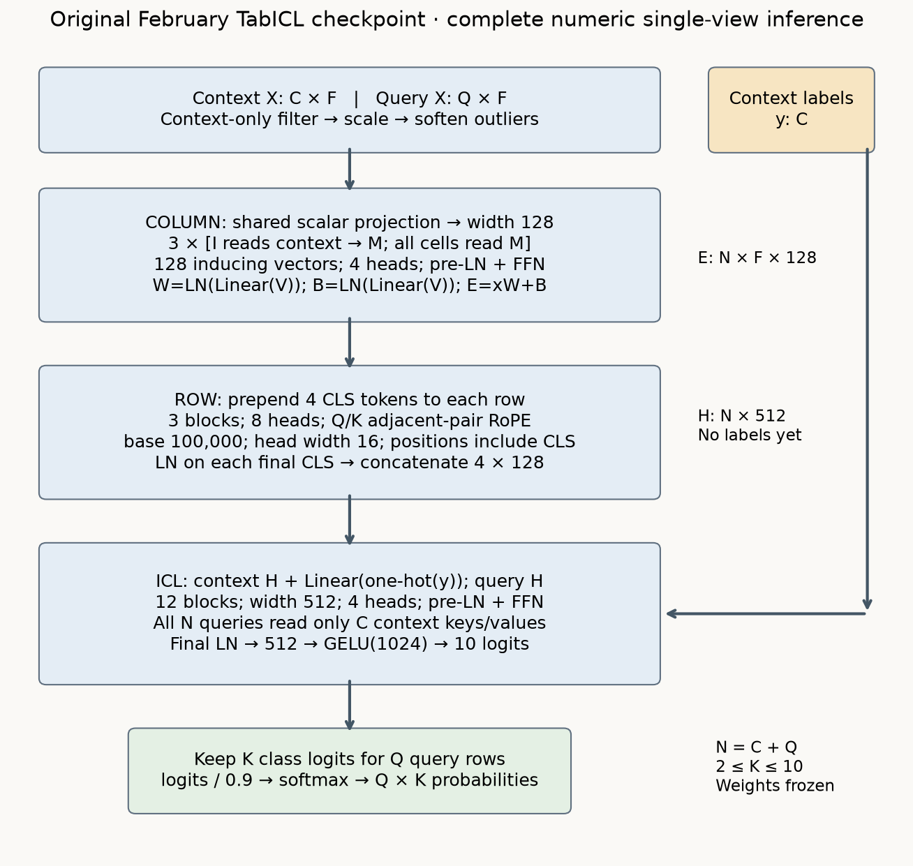

TabICL: complete forward and evidence card

Forward trace¶
- Finite numeric context fits nonconstant feature filter, std+1e-6 scaling/clipping and two-pass outlier bounds. Optional second normalizer: none.
- Shared scalar → 128 coordinates. Three ISABs; each has 128 inducing readers and two complete four-head pre-LN attention/FFN blocks.
- First MAB reads context tokens only; second lets all cell tokens read inducing memories. Independent heads generate normalized W and B; E=xW+B.
- Four CLS tokens prepend each row. Three eight-head blocks apply adjacent-pair Q/K RoPE, base 100000, head width 16. Normalize and concatenate four CLSs → 512.
- Context adds Linear(one-hot(y)); query receives no label embedding. Twelve four-head pre-LN ICL blocks use only context keys and values.
- Final LN → Linear 512→1024 → GELU → Linear 1024→10. Query rows, first K logits, temperature 0.9 softmax.
Boundaries and costs¶
Column memory excludes queries; row attention stays within a row; ICL keys exclude queries. Own query features still enter queries/residuals. The checked none-view wrapper fits context only. Optional power-view fallback can couple query preprocessing; inspect the executed counterexample.
With N=C+Q, F features and m=128, conceptual scores: column 12Fm(C+N); row 24N(F+4)²; ICL 48NC. The final term includes C². Full eager score matrices are visible here; original FlashAttention/batching/offload are not implemented.
Version and evidence¶
The active February v1-0208 checkpoint is the paper checkpoint, SHA f5bae1d31181a1bb4ab8e97d2a5e62a504e856f23b4ea62c7fcc2f8eec4995b6. Later v1.1-0506 results remain historical. Whole model parity does not reproduce pretraining or benchmark scores.
Paper §§3–5 · Original sources/checkpoint pins · Full-stage checks · Fresh predictions · Statistics · RoPE intervention · Wrapper coupling · Reproduction instructions.
Local full data: diabetes/blood transfusion/WDBC, seeds 7/17/27, 20% fixed queries, nested 12.5/37.5/100% context prefixes, one view. Original 64/16/20 and 32-view TALENT study, synthetic pretraining, many-class hierarchy and 500K offload test: NOT_RUN. The lab is INCOMPARABLE as a paper-result reproduction.
| Dataset | Context rows | Log loss mean ± SD | Accuracy mean ± SD |
|---|---|---|---|
| diabetes | 76 | 0.5021 ± 0.0492 | 0.7489 ± 0.0369 |
| diabetes | 230 | 0.4666 ± 0.0303 | 0.7771 ± 0.0246 |
| diabetes | 614 | 0.4585 ± 0.0240 | 0.7835 ± 0.0270 |
| blood_transfusion | 74 | 0.5672 ± 0.0684 | 0.7444 ± 0.0315 |
| blood_transfusion | 224 | 0.4930 ± 0.0270 | 0.7689 ± 0.0214 |
| blood_transfusion | 598 | 0.4713 ± 0.0245 | 0.7889 ± 0.0234 |
| wdbc | 56 | 0.0737 ± 0.0141 | 0.9795 ± 0.0101 |
| wdbc | 170 | 0.0657 ± 0.0197 | 0.9678 ± 0.0051 |
| wdbc | 455 | 0.0473 ± 0.0188 | 0.9825 ± 0.0088 |
Author-reference results, three seeds per cell. SD is sample standard deviation, not a confidence interval.